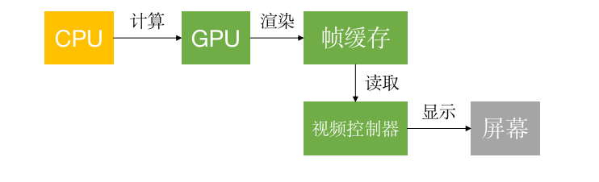
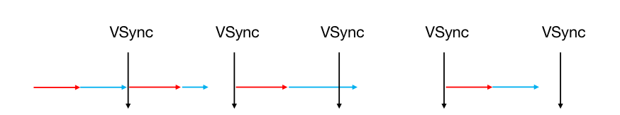

<!DOCTYPE html>


<html lang="en">
  

    <head>
      <meta charset="utf-8" />
        
      <meta
        name="viewport"
        content="width=device-width, initial-scale=1, maximum-scale=1"
      />
      <title>卡顿优化 |  ayer</title>
  <meta name="generator" content="hexo-theme-ayer">
      
      <link rel="shortcut icon" href="/favicon.ico" />
       
<link rel="stylesheet" href="/dist/main.css">

      <link
        rel="stylesheet"
        href="https://cdn.jsdelivr.net/gh/Shen-Yu/cdn/css/remixicon.min.css"
      />
      
<link rel="stylesheet" href="/css/custom.css">
 
      <script src="https://cdn.jsdelivr.net/npm/pace-js@1.0.2/pace.min.js"></script>
       
 

      <!-- mermaid -->
      
      <script src="https://cdn.jsdelivr.net/npm/mermaid@8.9.2/dist/mermaid.min.js"></script>
      
    <link rel="alternate" href="/atom.xml" title="ayer" type="application/atom+xml">
</head>
  </html>
</html>


<body>
  <div id="app">
    
      
    <main class="content on">
      <section class="outer">
  <article
  id="post-iOS学习/性能优化/卡顿优化"
  class="article article-type-post"
  itemscope
  itemprop="blogPost"
  data-scroll-reveal
>
  <div class="article-inner">
    
    <header class="article-header">
       
<h1 class="article-title sea-center" style="border-left:0" itemprop="name">
  卡顿优化
</h1>
 

      
    </header>
     
    <div class="article-meta">
      <a href="/2023/02/19/iOS%E5%AD%A6%E4%B9%A0/%E6%80%A7%E8%83%BD%E4%BC%98%E5%8C%96/%E5%8D%A1%E9%A1%BF%E4%BC%98%E5%8C%96/" class="article-date">
  <time datetime="2023-02-19T09:06:19.000Z" itemprop="datePublished">2023-02-19</time>
</a> 
  <div class="article-category">
    <a class="article-category-link" href="/categories/%E6%80%A7%E8%83%BD%E4%BC%98%E5%8C%96/">性能优化</a>
  </div>
  
<div class="word_count">
    <span class="post-time">
        <span class="post-meta-item-icon">
            <i class="ri-quill-pen-line"></i>
            <span class="post-meta-item-text"> Word count:</span>
            <span class="post-count">1.1k</span>
        </span>
    </span>

    <span class="post-time">
        &nbsp; | &nbsp;
        <span class="post-meta-item-icon">
            <i class="ri-book-open-line"></i>
            <span class="post-meta-item-text"> Reading time≈</span>
            <span class="post-count">4 min</span>
        </span>
    </span>
</div>
 
    </div>
      
    <div class="tocbot"></div>


  
    <div class="article-entry" itemprop="articleBody">
       
  <h2 id="CPU和GPU"><a href="#CPU和GPU" class="headerlink" title="CPU和GPU"></a>CPU和GPU</h2><blockquote>
<p>在屏幕成像的过程中，CPU和GPU起着至关重要的作用</p>
</blockquote>
<ul>
<li><p><code>CPU</code>（<code>Central Processing Unit</code>，中央处理器）</p>
<ul>
<li>对象的创建和销毁、对象属性的调整、布局计算、文本的计算和排版、图片的格式转换和解码、图像的绘制（<code>Core Graphics</code>）</li>
</ul>
</li>
<li><p><code>GPU</code>（<code>Graphics Processing Unit</code>，图形处理器）</p>
<ul>
<li>纹理的渲染<br></li>
</ul>
</li>
<li><p>在iOS中是双缓冲机制，有前帧缓存、后帧缓存</p>
<h3 id="卡顿产生的原因"><a href="#卡顿产生的原因" class="headerlink" title="卡顿产生的原因"></a>卡顿产生的原因</h3><p></p>
</li>
<li><p>卡顿解决的主要思路</p>
<ul>
<li>尽可能减少CPU、GPU资源消耗</li>
<li>按照60FPS的刷帧率，每隔16ms就会有一次VSync信号<h2 id="卡顿优化"><a href="#卡顿优化" class="headerlink" title="卡顿优化"></a>卡顿优化</h2><h3 id="CPU"><a href="#CPU" class="headerlink" title="CPU"></a>CPU</h3></li>
</ul>
</li>
<li><p>尽量用轻量级的对象，比如用不到事件处理的地方，可以考虑使用<code>CALayer</code>取代<code>UIView</code></p>
</li>
<li><p>不要频繁地调用UIView的相关属性，比如<code>frame</code>、<code>bounds</code>、<code>transform</code>等属性，尽量减少不必要的修改</p>
</li>
<li><p>尽量提前计算好布局，在有需要时一次性调整对应的属性，不要多次修改属性</p>
</li>
<li><p><code>Autolayout</code>会比直接设置<code>frame</code>消耗更多的CPU资源</p>
</li>
<li><p>图片的<code>size</code>最好刚好跟<code>UIImageView</code>的<code>size</code>保持一致</p>
</li>
<li><p>控制一下线程的最大并发数量</p>
</li>
<li><p>尽量把耗时的操作放到子线程</p>
<ul>
<li>文本处理（尺寸计算、绘制）</li>
<li>图片处理（解码、绘制）</li>
<li>iOS10以上支持<figure class="highlight plaintext"><table><tr><td class="gutter"><pre><span class="line">1</span><br><span class="line">2</span><br><span class="line">3</span><br><span class="line">4</span><br><span class="line">5</span><br><span class="line">6</span><br><span class="line">7</span><br><span class="line">8</span><br></pre></td><td class="code"><pre><span class="line">UIGraphicsImageRendererFormat *uiformat = [[UIGraphicsImageRenderer alloc] init];</span><br><span class="line">uiformat.scale = image.scale;</span><br><span class="line">uiformat.opaque = !hasAlpha;</span><br><span class="line">UIGraphicsImageRenderer *uirenderer = [[UIGraphicsImageRenderer alloc] initWithSize:imageSize format:uiformat];</span><br><span class="line">UIGraphicsImageDrawingActions uiactions = ^(UIGraphicsImageRendererContext *rendererContext) &#123;</span><br><span class="line">    [image drawInRect:CGRectMake(0, 0, imageSize.width, imageSize.height)];</span><br><span class="line">&#125;;</span><br><span class="line">UIImage *decodedImage = [uirenderer imageWithActions:uiactions];</span><br></pre></td></tr></table></figure></li>
<li>iOS10以下支持<figure class="highlight plaintext"><table><tr><td class="gutter"><pre><span class="line">1</span><br><span class="line">2</span><br><span class="line">3</span><br><span class="line">4</span><br><span class="line">5</span><br></pre></td><td class="code"><pre><span class="line">//redraw image using device context</span><br><span class="line">    UIGraphicsBeginImageContextWithOptions(imageView.bounds.size, YES, 0);</span><br><span class="line">    [image drawInRect:imageView.bounds];</span><br><span class="line">    image = UIGraphicsGetImageFromCurrentImageContext();</span><br><span class="line">    UIGraphicsEndImageContext();</span><br></pre></td></tr></table></figure>
<h3 id="GPU"><a href="#GPU" class="headerlink" title="GPU"></a>GPU</h3></li>
</ul>
</li>
<li><p>尽量避免短时间内大量图片的显示，尽可能将多张图片合成一张进行显示</p>
</li>
<li><p><code>GPU</code>能处理的最大纹理尺寸是<code>4096x4096</code>，一旦超过这个尺寸，就会占用CPU资源进行处理，所以纹理尽量不要超过这个尺寸</p>
</li>
<li><p>尽量减少视图数量和层次</p>
</li>
<li><p>减少透明的视图（<code>alpha</code>&lt;1），不透明的就设置<code>opaque</code>为YES</p>
</li>
<li><p>尽量避免出现离屏渲染</p>
<h4 id="离屏渲染"><a href="#离屏渲染" class="headerlink" title="离屏渲染"></a>离屏渲染</h4></li>
<li><p>在<code>OpenGL</code>中，<code>GPU</code>有2种渲染方式</p>
<ol>
<li><code>On-Screen Rendering</code>：当前屏幕渲染，在当前用于显示的屏幕缓冲区进行渲染操作</li>
<li><code>Off-Screen Rendering</code>：离屏渲染，在当前屏幕缓冲区以外新开辟一个缓冲区进行渲染操作</li>
</ol>
</li>
<li><p>离屏渲染消耗性能的原因</p>
<ul>
<li>需要创建新的缓冲区</li>
<li>离屏渲染的整个过程，需要多次切换上下文环境，先是从当前屏幕（<code>On-Screen</code>）切换到离屏（<code>Off-Screen</code>）；等到离屏渲染结束以后，将离屏缓冲区的渲染结果显示到屏幕上，又需要将上下文环境从离屏切换到当前屏幕</li>
</ul>
</li>
<li><p>哪些操作会触发离屏渲染？</p>
<ul>
<li><p>光栅化，<code>layer.shouldRasterize = YES</code></p>
</li>
<li><p>遮罩，<code>layer.mask</code></p>
</li>
<li><p>圆角，同时设置<code>layer.masksToBounds = YES</code>、<code>layer.cornerRadius大于0</code></p>
<ul>
<li>考虑通过<code>CoreGraphics</code>绘制裁剪圆角，或者提供圆角图片</li>
</ul>
</li>
</ul>
</li>
<li><p>阴影，<code>layer.shadowXXX</code></p>
<ul>
<li>如果设置了<code>layer.shadowPath</code>就不会产生离屏渲染<h3 id="卡顿检测"><a href="#卡顿检测" class="headerlink" title="卡顿检测"></a>卡顿检测</h3></li>
</ul>
</li>
<li><p>平时所说的“卡顿”主要是因为在主线程执行了比较耗时的操作</p>
</li>
<li><p>可以添加<code>Observer</code>到主线程<code>RunLoop</code>中，通过监听<code>RunLoop</code>状态切换的耗时，以达到监控卡顿的目的</p>
<ul>
<li>绘制操作基本都在<code>source0</code>和<code>source1</code>中处理,主要监听</li>
<li><code>kCFRunLoopBeforeWaiting</code>,开始休眠之前，处理的事件卡顿</li>
<li><code>kCFRunLoopBeforeSources</code>,处理source0，<code>kCFRunLoopAfterWaiting</code>，被source1唤醒处理的耗时<figure class="highlight plaintext"><table><tr><td class="gutter"><pre><span class="line">1</span><br><span class="line">2</span><br><span class="line">3</span><br><span class="line">4</span><br><span class="line">5</span><br><span class="line">6</span><br><span class="line">7</span><br><span class="line">8</span><br><span class="line">9</span><br><span class="line">10</span><br><span class="line">11</span><br><span class="line">12</span><br><span class="line">13</span><br><span class="line">14</span><br><span class="line">15</span><br><span class="line">16</span><br><span class="line">17</span><br><span class="line">18</span><br><span class="line">19</span><br><span class="line">20</span><br><span class="line">21</span><br><span class="line">22</span><br><span class="line">23</span><br><span class="line">24</span><br><span class="line">25</span><br><span class="line">26</span><br><span class="line">27</span><br><span class="line">28</span><br><span class="line">29</span><br><span class="line">30</span><br><span class="line">31</span><br><span class="line">32</span><br><span class="line">33</span><br><span class="line">34</span><br><span class="line">35</span><br><span class="line">36</span><br><span class="line">37</span><br><span class="line">38</span><br><span class="line">39</span><br><span class="line">40</span><br><span class="line">41</span><br><span class="line">42</span><br><span class="line">43</span><br><span class="line">44</span><br><span class="line">45</span><br><span class="line">46</span><br><span class="line">47</span><br><span class="line">48</span><br><span class="line">49</span><br><span class="line">50</span><br><span class="line">51</span><br><span class="line">52</span><br><span class="line">53</span><br><span class="line">54</span><br><span class="line">55</span><br><span class="line">56</span><br><span class="line">57</span><br><span class="line">58</span><br><span class="line">59</span><br><span class="line">60</span><br><span class="line">61</span><br><span class="line">62</span><br><span class="line">63</span><br><span class="line">64</span><br><span class="line">65</span><br><span class="line">66</span><br><span class="line">67</span><br><span class="line">68</span><br><span class="line">69</span><br></pre></td><td class="code"><pre><span class="line">- (void)startMonitoring &#123;</span><br><span class="line">    if (_isMonitoring) &#123; return; &#125;</span><br><span class="line">    _isMonitoring = YES;</span><br><span class="line">    CFRunLoopObserverContext context = &#123;</span><br><span class="line">        0,</span><br><span class="line">        (__bridge void *)self,</span><br><span class="line">        NULL,</span><br><span class="line">        NULL</span><br><span class="line">    &#125;;</span><br><span class="line">    _observer = CFRunLoopObserverCreate(kCFAllocatorDefault, kCFRunLoopAllActivities, YES, 0, &amp;lxdRunLoopObserverCallback, &amp;context);</span><br><span class="line">    CFRunLoopAddObserver(CFRunLoopGetMain(), _observer, kCFRunLoopCommonModes);</span><br><span class="line">    </span><br><span class="line">    dispatch_async(lxd_event_monitor_queue(), ^&#123;</span><br><span class="line">        while (self.isMonitoring) &#123;</span><br><span class="line">            if (self.currentActivity == kCFRunLoopBeforeWaiting) &#123;</span><br><span class="line">                __block BOOL timeOut = YES;</span><br><span class="line">                dispatch_async(dispatch_get_main_queue(), ^&#123;</span><br><span class="line">                    timeOut = NO;</span><br><span class="line">                    dispatch_semaphore_signal(self.eventSemphore);</span><br><span class="line">                &#125;);</span><br><span class="line">                //等待1s,看添加到主队列的block是否执行完</span><br><span class="line">                [NSThread sleepForTimeInterval: 1];</span><br><span class="line">                if (timeOut) &#123;</span><br><span class="line">                    [LXDBacktraceLogger lxd_logMain];//打印堆栈信息</span><br><span class="line">                &#125;</span><br><span class="line">                dispatch_wait(self.eventSemphore, DISPATCH_TIME_FOREVER);</span><br><span class="line">            &#125;</span><br><span class="line">        &#125;</span><br><span class="line">    &#125;);</span><br><span class="line">    </span><br><span class="line">    dispatch_async(lxd_fluecy_monitor_queue(), ^&#123;</span><br><span class="line">        while (self.isMonitoring) &#123;</span><br><span class="line">        //监听信号量解锁，并进行等待</span><br><span class="line">            long waitTime = dispatch_semaphore_wait(self.semphore, dispatch_time(DISPATCH_TIME_NOW, 200 * NSEC_PER_MSEC));//解锁成功返回0</span><br><span class="line">            if (waitTime != 0) &#123;</span><br><span class="line">                if (!self.observer) &#123;</span><br><span class="line">                    self.timeOut = 0;</span><br><span class="line">                    [self stopMonitoring];</span><br><span class="line">                    continue;</span><br><span class="line">                &#125;</span><br><span class="line">                //是否当前状态一直卡处理source0和休眠唤醒状态，超过5次，就打印</span><br><span class="line">                if (self.currentActivity == kCFRunLoopBeforeSources || self.currentActivity == kCFRunLoopAfterWaiting) &#123;</span><br><span class="line">                    if (++self.timeOut &lt; 5) &#123;</span><br><span class="line">                        continue;</span><br><span class="line">                    &#125;</span><br><span class="line">                    [LXDBacktraceLogger lxd_logMain];</span><br><span class="line">                    [NSThread sleepForTimeInterval: 5];</span><br><span class="line">                &#125;</span><br><span class="line">            &#125;</span><br><span class="line">            self.timeOut = 0;</span><br><span class="line">        &#125;</span><br><span class="line">    &#125;);</span><br><span class="line">&#125;</span><br><span class="line"></span><br><span class="line">- (void)stopMonitoring &#123;</span><br><span class="line">    if (!_isMonitoring) &#123; return; &#125;</span><br><span class="line">    _isMonitoring = NO;</span><br><span class="line">    </span><br><span class="line">    CFRunLoopRemoveObserver(CFRunLoopGetMain(), _observer, kCFRunLoopCommonModes);</span><br><span class="line">    CFRelease(_observer);</span><br><span class="line">    _observer = nil;</span><br><span class="line">&#125;</span><br><span class="line"></span><br><span class="line"></span><br><span class="line">static void lxdRunLoopObserverCallback(CFRunLoopObserverRef observer, CFRunLoopActivity activity, void * info) &#123;</span><br><span class="line">    [LXDAppFluecyMonitor sharedMonitor].currentActivity = activity;</span><br><span class="line">    //每次变化进行信号量的增加，在监听的队列进行减少</span><br><span class="line">    dispatch_semaphore_signal([LXDAppFluecyMonitor sharedMonitor].semphore);</span><br><span class="line">&#125;</span><br></pre></td></tr></table></figure></li>
</ul>
</li>
</ul>
 
      <!-- reward -->
      
    </div>
    

    <!-- copyright -->
    
    <div class="declare">
      <ul class="post-copyright">
        <li>
          <i class="ri-copyright-line"></i>
          <strong>Copyright： </strong>
          
          Copyright is owned by the author. For commercial reprints, please contact the author for authorization. For non-commercial reprints, please indicate the source.
          
        </li>
      </ul>
    </div>
    
    <footer class="article-footer">
       
<div class="share-btn">
      <span class="share-sns share-outer">
        <i class="ri-share-forward-line"></i>
        分享
      </span>
      <div class="share-wrap">
        <i class="arrow"></i>
        <div class="share-icons">
          
          <a class="weibo share-sns" href="javascript:;" data-type="weibo">
            <i class="ri-weibo-fill"></i>
          </a>
          <a class="weixin share-sns wxFab" href="javascript:;" data-type="weixin">
            <i class="ri-wechat-fill"></i>
          </a>
          <a class="qq share-sns" href="javascript:;" data-type="qq">
            <i class="ri-qq-fill"></i>
          </a>
          <a class="douban share-sns" href="javascript:;" data-type="douban">
            <i class="ri-douban-line"></i>
          </a>
          <!-- <a class="qzone share-sns" href="javascript:;" data-type="qzone">
            <i class="icon icon-qzone"></i>
          </a> -->
          
          <a class="facebook share-sns" href="javascript:;" data-type="facebook">
            <i class="ri-facebook-circle-fill"></i>
          </a>
          <a class="twitter share-sns" href="javascript:;" data-type="twitter">
            <i class="ri-twitter-fill"></i>
          </a>
          <a class="google share-sns" href="javascript:;" data-type="google">
            <i class="ri-google-fill"></i>
          </a>
        </div>
      </div>
</div>

<div class="wx-share-modal">
    <a class="modal-close" href="javascript:;"><i class="ri-close-circle-line"></i></a>
    <p>扫一扫，分享到微信</p>
    <div class="wx-qrcode">
      
    </div>
</div>

<div id="share-mask"></div>  
    </footer>
  </div>

   
  <nav class="article-nav">
    
      <a href="/2023/02/19/iOS%E5%AD%A6%E4%B9%A0/%E6%80%A7%E8%83%BD%E4%BC%98%E5%8C%96/%E8%80%97%E7%94%B5%E4%BC%98%E5%8C%96/" class="article-nav-link">
        <strong class="article-nav-caption">上一篇</strong>
        <div class="article-nav-title">
          
            耗电优化
          
        </div>
      </a>
    
    
      <a href="/2023/02/18/iOS%E5%AD%A6%E4%B9%A0/%E5%86%85%E5%AD%98%E7%AE%A1%E7%90%86/%E8%87%AA%E5%8A%A8%E9%87%8A%E6%94%BE%E6%B1%A0/" class="article-nav-link">
        <strong class="article-nav-caption">下一篇</strong>
        <div class="article-nav-title">自动释放池</div>
      </a>
    
  </nav>

   
<!-- valine评论 -->
<div id="vcomments-box">
  <div id="vcomments"></div>
</div>
<script src="//cdn1.lncld.net/static/js/3.0.4/av-min.js"></script>
<script src="https://cdn.jsdelivr.net/npm/valine@1.4.14/dist/Valine.min.js"></script>
<script>
  new Valine({
    el: "#vcomments",
    app_id: "",
    app_key: "",
    path: window.location.pathname,
    avatar: "monsterid",
    placeholder: "给我的文章加点评论吧~",
    recordIP: true,
  });
  const infoEle = document.querySelector("#vcomments .info");
  if (infoEle && infoEle.childNodes && infoEle.childNodes.length > 0) {
    infoEle.childNodes.forEach(function (item) {
      item.parentNode.removeChild(item);
    });
  }
</script>
<style>
  #vcomments-box {
    padding: 5px 30px;
  }

  @media screen and (max-width: 800px) {
    #vcomments-box {
      padding: 5px 0px;
    }
  }

  #vcomments-box #vcomments {
    background-color: #fff;
  }

  .v .vlist .vcard .vh {
    padding-right: 20px;
  }

  .v .vlist .vcard {
    padding-left: 10px;
  }
</style>

 
   
     
</article>

</section>
      <footer class="footer">
  <div class="outer">
    <ul>
      <li>
        Copyrights &copy;
        2021-2023
        <i class="ri-heart-fill heart_icon"></i> jingbo
      </li>
    </ul>
    <ul>
      <li>
        
        
        
        Powered by <a href="https://hexo.io" target="_blank">Hexo</a>
        <span class="division">|</span>
        Theme - <a href="https://github.com/Shen-Yu/hexo-theme-ayer" target="_blank">Ayer</a>
        
      </li>
    </ul>
    <ul>
      <li>
        
        
        <span>
  <span><i class="ri-user-3-fill"></i>Visitors:<span id="busuanzi_value_site_uv"></span></span>
  <span class="division">|</span>
  <span><i class="ri-eye-fill"></i>Views:<span id="busuanzi_value_page_pv"></span></span>
</span>
        
      </li>
    </ul>
    <ul>
      
    </ul>
    <ul>
      
    </ul>
    <ul>
      <li>
        <!-- cnzz统计 -->
        
        <script type="text/javascript" src='https://s9.cnzz.com/z_stat.php?id=1278069914&amp;web_id=1278069914'></script>
        
      </li>
    </ul>
  </div>
</footer>
      <div class="float_btns">
        <div class="totop" id="totop">
  <i class="ri-arrow-up-line"></i>
</div>

<div class="todark" id="todark">
  <i class="ri-moon-line"></i>
</div>

      </div>
    </main>
    <aside class="sidebar on">
      <button class="navbar-toggle"></button>
<nav class="navbar">
  
  <div class="logo">
    <a href="/"></a>
  </div>
  
  <ul class="nav nav-main">
    
    <li class="nav-item">
      <a class="nav-item-link" href="/">主页</a>
    </li>
    
    <li class="nav-item">
      <a class="nav-item-link" href="/archives">归档</a>
    </li>
    
    <li class="nav-item">
      <a class="nav-item-link" href="/categories">分类</a>
    </li>
    
    <li class="nav-item">
      <a class="nav-item-link" href="/tags">标签</a>
    </li>
    
    <li class="nav-item">
      <a class="nav-item-link" href="/photos">相册</a>
    </li>
    
  </ul>
</nav>
<nav class="navbar navbar-bottom">
  <ul class="nav">
    <li class="nav-item">
      
      <a class="nav-item-link nav-item-search"  title="Search">
        <i class="ri-search-line"></i>
      </a>
      
      
      <a class="nav-item-link" target="_blank" href="/atom.xml" title="RSS Feed">
        <i class="ri-rss-line"></i>
      </a>
      
    </li>
  </ul>
</nav>
<div class="search-form-wrap">
  <div class="local-search local-search-plugin">
  <input type="search" id="local-search-input" class="local-search-input" placeholder="Search...">
  <div id="local-search-result" class="local-search-result"></div>
</div>
</div>
    </aside>
    <div id="mask"></div>

<!-- #reward -->
<div id="reward">
  <span class="close"><i class="ri-close-line"></i></span>
  <p class="reward-p"><i class="ri-cup-line"></i>请我喝杯咖啡吧~</p>
  <div class="reward-box">
    
    <div class="reward-item">
      
      <span class="reward-type">支付宝</span>
    </div>
    
    
    <div class="reward-item">
      
      <span class="reward-type">微信</span>
    </div>
    
  </div>
</div>
    
<script src="/js/jquery-2.0.3.min.js"></script>
 
<script src="/js/lazyload.min.js"></script>

<!-- Tocbot -->
 
<script src="/js/tocbot.min.js"></script>

<script>
  tocbot.init({
    tocSelector: ".tocbot",
    contentSelector: ".article-entry",
    headingSelector: "h1, h2, h3, h4, h5, h6",
    hasInnerContainers: true,
    scrollSmooth: true,
    scrollContainer: "main",
    positionFixedSelector: ".tocbot",
    positionFixedClass: "is-position-fixed",
    fixedSidebarOffset: "auto",
  });
</script>

<script src="https://cdn.jsdelivr.net/npm/jquery-modal@0.9.2/jquery.modal.min.js"></script>
<link
  rel="stylesheet"
  href="https://cdn.jsdelivr.net/npm/jquery-modal@0.9.2/jquery.modal.min.css"
/>
<script src="https://cdn.jsdelivr.net/npm/justifiedGallery@3.7.0/dist/js/jquery.justifiedGallery.min.js"></script>

<script src="/dist/main.js"></script>

<!-- ImageViewer -->
 <!-- Root element of PhotoSwipe. Must have class pswp. -->
<div class="pswp" tabindex="-1" role="dialog" aria-hidden="true">

    <!-- Background of PhotoSwipe. 
         It's a separate element as animating opacity is faster than rgba(). -->
    <div class="pswp__bg"></div>

    <!-- Slides wrapper with overflow:hidden. -->
    <div class="pswp__scroll-wrap">

        <!-- Container that holds slides. 
            PhotoSwipe keeps only 3 of them in the DOM to save memory.
            Don't modify these 3 pswp__item elements, data is added later on. -->
        <div class="pswp__container">
            <div class="pswp__item"></div>
            <div class="pswp__item"></div>
            <div class="pswp__item"></div>
        </div>

        <!-- Default (PhotoSwipeUI_Default) interface on top of sliding area. Can be changed. -->
        <div class="pswp__ui pswp__ui--hidden">

            <div class="pswp__top-bar">

                <!--  Controls are self-explanatory. Order can be changed. -->

                <div class="pswp__counter"></div>

                <button class="pswp__button pswp__button--close" title="Close (Esc)"></button>

                <button class="pswp__button pswp__button--share" style="display:none" title="Share"></button>

                <button class="pswp__button pswp__button--fs" title="Toggle fullscreen"></button>

                <button class="pswp__button pswp__button--zoom" title="Zoom in/out"></button>

                <!-- Preloader demo http://codepen.io/dimsemenov/pen/yyBWoR -->
                <!-- element will get class pswp__preloader--active when preloader is running -->
                <div class="pswp__preloader">
                    <div class="pswp__preloader__icn">
                        <div class="pswp__preloader__cut">
                            <div class="pswp__preloader__donut"></div>
                        </div>
                    </div>
                </div>
            </div>

            <div class="pswp__share-modal pswp__share-modal--hidden pswp__single-tap">
                <div class="pswp__share-tooltip"></div>
            </div>

            <button class="pswp__button pswp__button--arrow--left" title="Previous (arrow left)">
            </button>

            <button class="pswp__button pswp__button--arrow--right" title="Next (arrow right)">
            </button>

            <div class="pswp__caption">
                <div class="pswp__caption__center"></div>
            </div>

        </div>

    </div>

</div>

<link rel="stylesheet" href="https://cdn.jsdelivr.net/npm/photoswipe@4.1.3/dist/photoswipe.min.css">
<link rel="stylesheet" href="https://cdn.jsdelivr.net/npm/photoswipe@4.1.3/dist/default-skin/default-skin.min.css">
<script src="https://cdn.jsdelivr.net/npm/photoswipe@4.1.3/dist/photoswipe.min.js"></script>
<script src="https://cdn.jsdelivr.net/npm/photoswipe@4.1.3/dist/photoswipe-ui-default.min.js"></script>

<script>
    function viewer_init() {
        let pswpElement = document.querySelectorAll('.pswp')[0];
        let $imgArr = document.querySelectorAll(('.article-entry img:not(.reward-img)'))

        $imgArr.forEach(($em, i) => {
            $em.onclick = () => {
                // slider展开状态
                // todo: 这样不好，后面改成状态
                if (document.querySelector('.left-col.show')) return
                let items = []
                $imgArr.forEach(($em2, i2) => {
                    let img = $em2.getAttribute('data-idx', i2)
                    let src = $em2.getAttribute('data-target') || $em2.getAttribute('src')
                    let title = $em2.getAttribute('alt')
                    // 获得原图尺寸
                    const image = new Image()
                    image.src = src
                    items.push({
                        src: src,
                        w: image.width || $em2.width,
                        h: image.height || $em2.height,
                        title: title
                    })
                })
                var gallery = new PhotoSwipe(pswpElement, PhotoSwipeUI_Default, items, {
                    index: parseInt(i)
                });
                gallery.init()
            }
        })
    }
    viewer_init()
</script> 
<!-- MathJax -->
 <script type="text/x-mathjax-config">
  MathJax.Hub.Config({
      tex2jax: {
          inlineMath: [ ['$','$'], ["\\(","\\)"]  ],
          processEscapes: true,
          skipTags: ['script', 'noscript', 'style', 'textarea', 'pre', 'code']
      }
  });

  MathJax.Hub.Queue(function() {
      var all = MathJax.Hub.getAllJax(), i;
      for(i=0; i < all.length; i += 1) {
          all[i].SourceElement().parentNode.className += ' has-jax';
      }
  });
</script>

<script src="https://cdn.jsdelivr.net/npm/mathjax@2.7.6/unpacked/MathJax.js?config=TeX-AMS-MML_HTMLorMML"></script>
<script>
  var ayerConfig = {
    mathjax: true,
  };
</script>

<!-- Katex -->

<!-- busuanzi  -->
 
<script src="/js/busuanzi-2.3.pure.min.js"></script>
 
<!-- ClickLove -->
 
<script src="/js/clickLove.js"></script>
 
<!-- ClickBoom1 -->

<!-- ClickBoom2 -->

<!-- CodeCopy -->
 
<link rel="stylesheet" href="/css/clipboard.css">
 <script src="https://cdn.jsdelivr.net/npm/clipboard@2/dist/clipboard.min.js"></script>
<script>
  function wait(callback, seconds) {
    var timelag = null;
    timelag = window.setTimeout(callback, seconds);
  }
  !function (e, t, a) {
    var initCopyCode = function(){
      var copyHtml = '';
      copyHtml += '<button class="btn-copy" data-clipboard-snippet="">';
      copyHtml += '<i class="ri-file-copy-2-line"></i><span>COPY</span>';
      copyHtml += '</button>';
      $(".highlight .code pre").before(copyHtml);
      $(".article pre code").before(copyHtml);
      var clipboard = new ClipboardJS('.btn-copy', {
        target: function(trigger) {
          return trigger.nextElementSibling;
        }
      });
      clipboard.on('success', function(e) {
        let $btn = $(e.trigger);
        $btn.addClass('copied');
        let $icon = $($btn.find('i'));
        $icon.removeClass('ri-file-copy-2-line');
        $icon.addClass('ri-checkbox-circle-line');
        let $span = $($btn.find('span'));
        $span[0].innerText = 'COPIED';
        
        wait(function () { // 等待两秒钟后恢复
          $icon.removeClass('ri-checkbox-circle-line');
          $icon.addClass('ri-file-copy-2-line');
          $span[0].innerText = 'COPY';
        }, 2000);
      });
      clipboard.on('error', function(e) {
        e.clearSelection();
        let $btn = $(e.trigger);
        $btn.addClass('copy-failed');
        let $icon = $($btn.find('i'));
        $icon.removeClass('ri-file-copy-2-line');
        $icon.addClass('ri-time-line');
        let $span = $($btn.find('span'));
        $span[0].innerText = 'COPY FAILED';
        
        wait(function () { // 等待两秒钟后恢复
          $icon.removeClass('ri-time-line');
          $icon.addClass('ri-file-copy-2-line');
          $span[0].innerText = 'COPY';
        }, 2000);
      });
    }
    initCopyCode();
  }(window, document);
</script>
 
<!-- CanvasBackground -->
 
<script src="/js/dz.js"></script>
 
<script>
  if (window.mermaid) {
    mermaid.initialize({ theme: "forest" });
  }
</script>


    
    <div id="music">
    
    
    
    <iframe frameborder="no" border="1" marginwidth="0" marginheight="0" width="200" height="86"
        src="//music.163.com/outchain/player?type=2&id=22707022&auto=1&height=66"></iframe>
</div>

<style>
    #music {
        position: fixed;
        right: 15px;
        bottom: 0;
        z-index: 998;
    }
</style>
    
  </div>
<script src="/live2dw/lib/L2Dwidget.min.js?094cbace49a39548bed64abff5988b05"></script><script>L2Dwidget.init({"pluginRootPath":"live2dw/","pluginJsPath":"lib/","pluginModelPath":"assets/","tagMode":false,"debug":false,"model":{"show":true,"jsonPath":"ak12_3302"},"display":{"position":"right","width":150,"height":300,"vOffset":100},"mobile":{"show":true},"react":{"opacity":0.7},"log":false});</script></body>

</html>